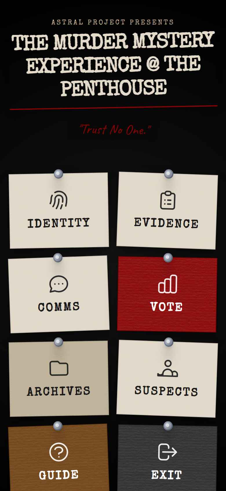
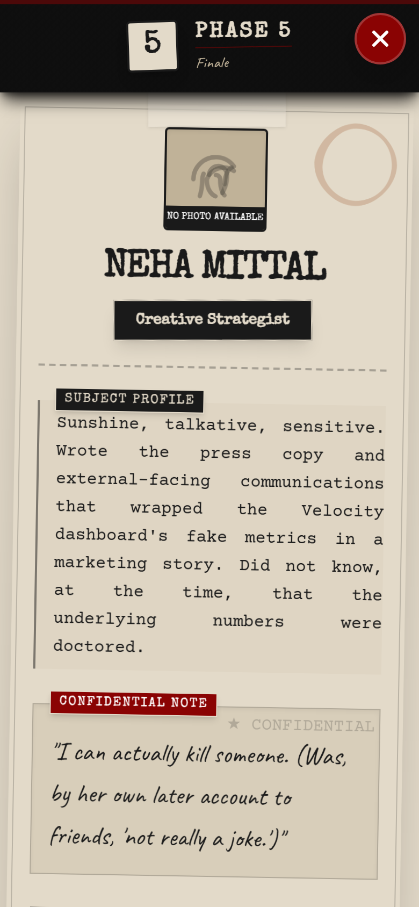
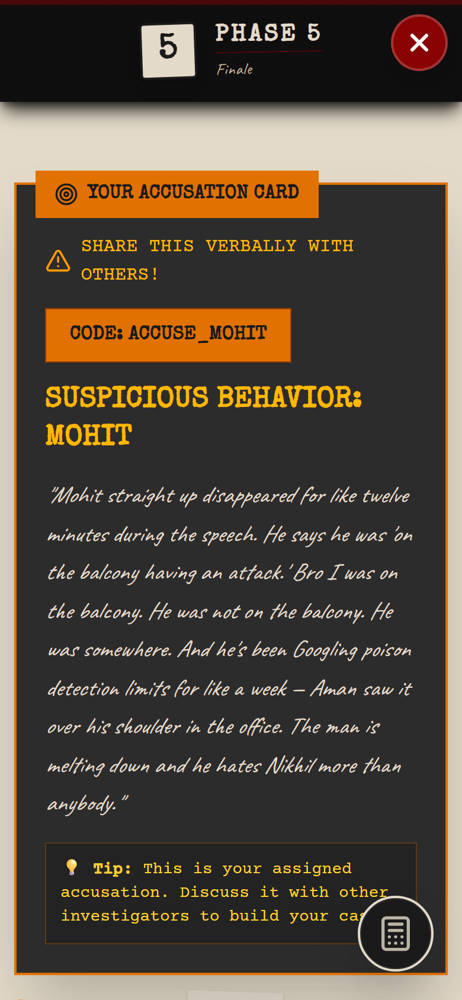
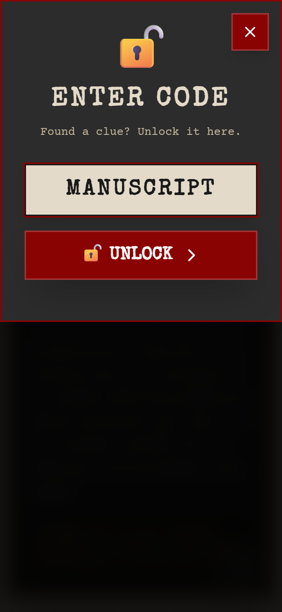
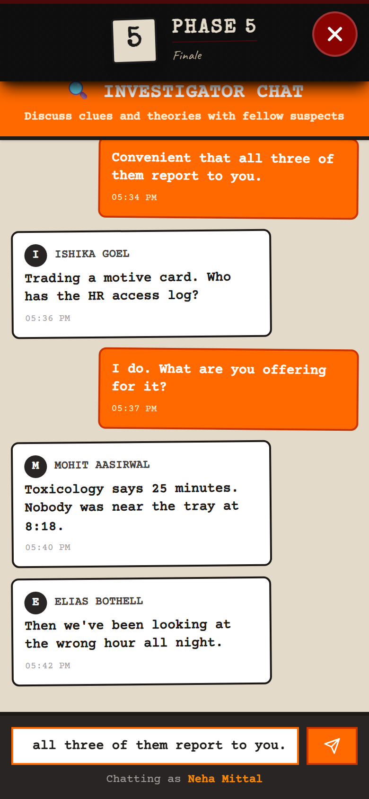
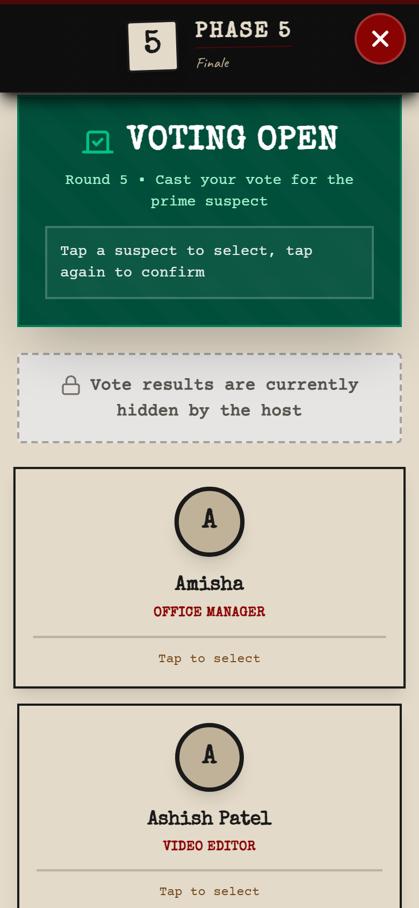
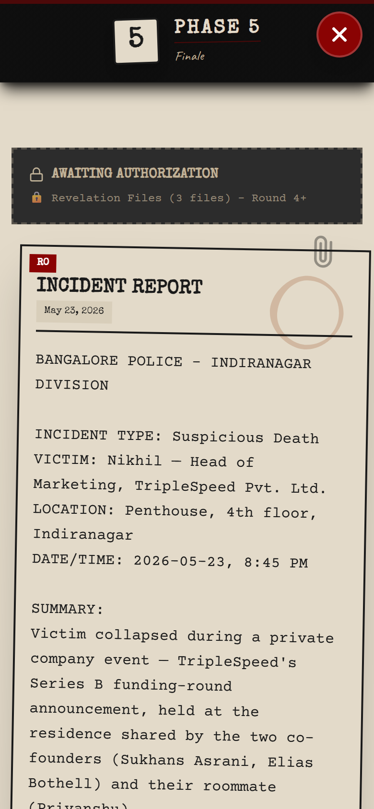
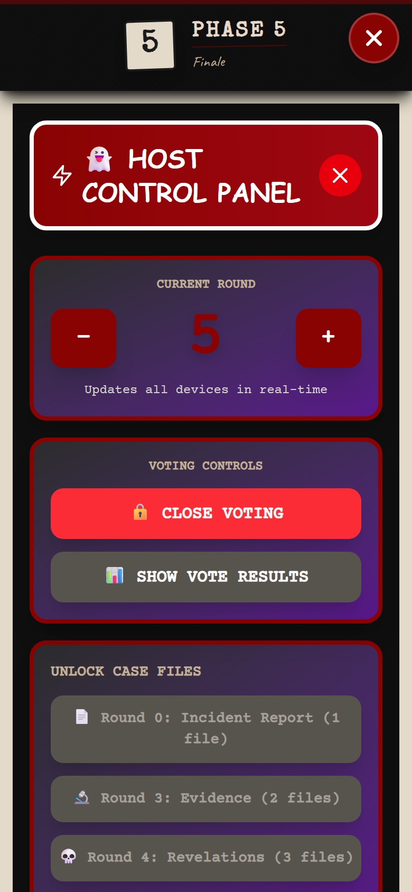

Murder
Mystery
Thirty-two strangers. One story. Every player holds a piece nobody else has — and the only way out is to talk to each other.
Case Index
The
Thesis
A live game engine for real rooms
Astral Project Murder Mystery is a technology-powered live social gaming platform. Every participant becomes a unique character inside an interactive story. The custom application handles onboarding, character delivery, clues, objectives, evidence, progression and voting — so events scale without losing quality.
The Story
A three-hour narrative with a verifiable solution. 32 characters, a hidden truth, and a chain of evidence that only assembles when people compare notes.
The App
A phone becomes the character sheet, the evidence locker, the comms channel and the ballot box. No install, no rulebook, no downtime.
The Room
Everything that matters happens face to face. The app never lets a player finish alone — progress requires another human.
The Reveal
A synchronised ending across every device in the venue. One shared moment the whole room experiences at the same second.
Build the world's leading platform for
real-world multiplayer entertainment
Murder Mystery is not the company. It is the first experience built on a reusable technology platform — and the proof that the platform works.
The hard parts of a live social game — synchronising 32 devices, gating information by round, arming a non-expert host, and landing an ending everyone feels at once — are identical across genres. Solve them once, and every new world is a content problem, not an engineering problem.
- Content is data, not code. A new story ships as a pack, not a release.
- Delivery is a URL. No store review, no install friction, no per-venue rig.
- Capacity is set by the room, not by the equipment.
Murder Mystery
Whodunnit, 32 players, 7 rounds.
Espionage
Competing factions, double agents.
Fantasy
Quest lines, factions, artefacts.
Horror
Survival pacing, hidden infection.
Treasure Hunt
Location-gated, venue-native.
Branded & Edu
Client IP, onboarding, training.
Putting people in a room does not make them meet
Parties, offsites, networking nights and mixers all share one failure mode: people arrive in a group and leave in the same group. Nothing in the format gives a stranger a reason to start talking — or a way to stop.
The Cluster
Guests default to the people they came with. Attendance is high, mixing is near zero, and the host has no lever to change it beyond asking nicely.
The Capacity Ceiling
Escape rooms and immersive theatre create real interaction, but cap at 6–10 people per run and need a built set, a rig, or trained actors.
The Friendship Tax
Board games and party games assume existing rapport. They deepen groups that already work; they don't create new ones.
asymmetry
Astral Project distributes unique information across every single player. No one can finish alone, and no one can finish with only their own table. Talking to a stranger stops being social bravery and becomes the optimal move. The awkwardness is designed out — the game gives you the opening line.
The gap in the category
| Format | Capacity | Mixes strangers | Setup cost | Why it stalls |
|---|---|---|---|---|
| Escape room | 6–10 | Partially | Built set per room | Physical capacity is the product. Scaling means building another room. |
| Immersive theatre | 20–200 | Rarely | Cast, venue, rehearsal | Audiences watch performers. Guests interact with the show, not each other. |
| Board / party games | 4–12 | No | Low | Assumes existing rapport. Doesn't scale past one table. |
| Standard party or mixer | Unlimited | No | Low | No structure. Guests self-sort into the groups they arrived with. |
| Astral Project | 32+ | By design — required | One host, printed cards | Nothing yet. Story supply and trained hosts are the scaling constraint — both are solvable. |
Ninety years of trying to make a room play together
Mysteries
RPGs
Rooms
Theatre
Party Games
Live Play
Every wave raised immersion. Every wave paid for it in capacity, cost, or rehearsal.
Everyone now carries a synchronised, networked screen. The game master can be software.
Immersion of theatre. Capacity of a party. Operating cost of a quiz night.
The
Experience
A three-hour story played by the whole room
Up to 32 guests log in as characters in a single murder case. Each one receives a private identity, a secret, a motive and a timeline. A host advances the story in rounds; the app releases information; players trade what they know face to face; the room votes; the truth is revealed on every screen at once.
What the guests are inside
- A death at a company party, with a fixed and provable truth
- Every character is a real position in that truth — no filler roles
- Red herrings are authored, not accidental
- The ending reframes the whole evening
What the guests actually do
- Interrogate, bargain, bluff and form alliances in person
- Trade codes from printed cards to unlock each other's evidence
- Publicly accuse — and publicly defend
- Vote, watch the room turn, and vote again
What the platform runs
- Identity delivery and per-player private briefs
- Round-gated unlocks so nobody can skip ahead
- Live chat, live vote tallies, live host control
- A synchronised reveal across every device
Thirty-two characters. One of them did it.
The Murderer
One player, playing against the room, with a private path to a confession only they can unlock.
The Suspects
Ten characters carry a public motive. Each is genuinely plausible — and each is genuinely innocent bar one.
The Witnesses
Everyone else. Each holds one observation that matters to somebody. There are no spectators.
The Victim
Present in files, forensics, messages and CCTV rather than in the room — the case's centre of gravity.
| Identity | Name, role and profession |
| Bio | Where they fit in the world of the story |
| Quirk | How to play them without acting experience |
| Secret | The thing they will lie to protect |
| Never-do | Their red line — the improv guardrail |
| Timeline | Time-stamped movements to defend or attack |
| Code | A personal code others must obtain in person |
Door to verdict
Left unstructured, a mystery collapses in twenty minutes — the loudest table solves it and everyone else spectates. Round gating means nobody can run ahead, the room stays synchronised, and every guest re-enters the story at each beat.
Three modes, cycling all night
Investigate
Read the files. Compare timelines. Find the two statements that cannot both be true.
- Unlock evidence with codes from printed cards
- Cross-reference the victim's timeline against alibis
- Open case files as the host releases them
Negotiate
Information is currency. You have some. You need more. Everything is a trade.
- Swap codes face to face to unlock each other's clues
- Protect your own secret while extracting theirs
- Form and betray alliances in real time
Decide
Take a public position. Defend it in front of thirty-one people. Change it if you're wrong.
- Vote — and see the tally move live
- Lobby the room when the count turns against you
- Commit before the reveal
A quiet guest is never stranded. The app always hands them a specific reason to approach a specific person — a code to obtain, an alibi to check, an accusation to deliver. The character is the cover story, and the objective is the opening line.
The
System
The application is a live game engine
It synchronises story chapters, distributes information, stores evidence, manages objectives and lets a host control pacing from their own phone — which is what makes stories reusable and the platform licensable.
Installable web app
An installable progressive web app. Opens from a QR code in any mobile browser, adds to the home screen, keeps working through patchy venue wifi, and buzzes on new messages.
One shared truth
Round, voting status, tallies, unlocked files and chat live in a realtime database. When the host moves the story, thirty-two devices change within a second — no refresh, no “did everyone get that?”
The story pack
Characters, clue database, case files, round definitions and access codes are data. A new mystery is a new pack against the same engine — no rebuild of the game logic.
Because content and engine are separated, the marginal cost of a new experience is writing, not engineering — and the marginal cost of a new venue is a link, not a build-out. That is the whole basis of the licensing and franchise lines in Chapter 17.
Onboarding & identity
The first four minutes decide whether a guest plays or watches. The app compresses onboarding into scan → code → you are someone else — with no account, no tutorial and no host explaining rules to thirty-two people at once.
- No registration desk and no laptop bottleneck at the door
- Late arrivals self-onboard without pausing the game
- The rules live in the app, so the host never runs a briefing


Evidence, decoding & comms
This is the loop the whole evening runs on: get a code from a person, type it in, watch the case change. The physical card is the social object; the app is what makes it mean something.
- A code has to be obtained from someone — the app can't hand it over
- Round-gating rejects codes entered too early, so nobody outruns the story
- Printed cards keep hands and eyes in the room, not on a screen



Verdict, archives & host control
The endgame is where most social games fall apart — ambiguity, a shrug, everyone drifts to the bar. Here it is a public vote, a live tally, and one synchronised reveal fired by the host from their pocket.
- The host runs the entire evening from one phone, anywhere in the venue
- No scoring by hand, no counting ballots, no announcements over noise
- The ending lands on 32 screens in the same second



Thirty-two roles, zero dead ends
The hardest problem in a large-group social game is not the puzzle — it is making sure the thirty-second-most-important person still matters at 10pm. The character system is built entirely around that constraint.
No spectators
Every character — including every witness — holds at least one piece of information another player needs. Being minor in the plot never means being idle in the room.
Improv guardrails
A quirk tells you how to behave; a never-do tells you what to protect. Two lines are enough for a guest with no acting experience to stay in character for three hours.
Plausible guilt
Ten characters carry a motive strong enough to convict on. The room has to reason from evidence, not vibes — and the wrong answer has to feel right first.
Nothing to memorise
The brief stays in the pocket, searchable, all night. Guests re-read their own timeline mid-argument instead of bluffing from memory.
Large enough that no one can talk to everybody — so information genuinely has to travel through the room — and small enough that a single host can pace it and one venue can hold it. The pack format allows other cast sizes; 32 is the tested configuration.
Characters are assigned, not chosen at random by guests. That lets a host seed the loudest personalities into suspect roles and put quieter guests where a single well-timed observation lands hardest.
The real asset is the information graph
A story pack is not prose. It is a structure: who knows what, who can prove it, when it becomes available, and which two facts contradict each other. Writing the story is the easy half. Wiring the graph is the intellectual property.
- Premise — the crime, the venue, the hour of death
- Cast — roles, relationships, and who benefits
- Timeline of truth — what actually happened, minute by minute
- Information graph — who observes which fragment, and what it contradicts
- Round gating — the order fragments become legal to reveal
- Code sheets — printed artefacts that force the trade
- Playtest — solve-time, dead-end audit, red-herring calibration
| Characters | Full private briefs and per-player access codes |
| Accusations | Pre-assigned so every guest opens with something to say |
| Motives | One per suspect, all individually convincing |
| Evidence | Forensics, documents and footage, round-gated |
| Revelations | Late-game turns that invalidate the obvious reading |
| Confession | A private endgame path only the guilty player can open |
| Case files | Host-released documents attached to specific rounds |
Swap the pack, keep the engine. That single property is what makes espionage, horror and branded experiences a writing exercise rather than a rebuild.
Seven rounds, one release valve at a time
| Round | Beat | What unlocks | Guest behaviour | Host action |
|---|---|---|---|---|
| 0 | The Incident | Incident report; all character profiles | Reading, mingling, sizing people up | Open the case; set the tone |
| 1 | Accusations | One pre-assigned accusation per player | First public naming of a suspect | Advance round; prompt the room |
| 2 | Motives | Ten motive codes on printed cards | Trading begins in earnest | Distribute motive cards |
| 3 | Evidence | Forensics, documents, footage | Theories harden; factions form | Release case files; open voting |
| 4 | Revelations | Records and correspondence that reframe motive | The leading theory starts to crack | Release second file wave |
| 5 | Bombshells | Final revelation codes; access trails | Panic, re-lobbying, vote switching | Reopen voting; hold results |
| 6 | The Reveal | Final tally shown; confession path opens | The room commits, then finds out | Show results, then fire the reveal |
Codes are social objects
Held by a person, not a screen
Codes arrive on printed cards, or belong to a specific character. The only way to get one you don't have is to persuade someone to give it to you.
Gated by the round
A valid code entered too early is rejected as locked. Nobody can sprint to the ending, and a leaked code is worth nothing until the story has caught up.
Permanent, visible, yours
The unlocked fragment joins that player's evidence board. They now hold something worth trading — and the loop restarts one conversation deeper.
The
Operation
One host. One venue. No moving parts.
Setup
- Print character cards and clue cards
- Assign the cast — loud guests into suspect roles
- Post the QR code at the entrance
- Check phone signal and set the room
Run
- Advance a round every 15–20 minutes
- Hand out that round's printed cards
- Release case files at the story beats
- Open and close voting; hold the results
Land it
- Fire the synchronised reveal
- Debrief: who suspected whom, and why
- Photos while everyone is still in character
- Reset the game state for the next run
The venue requirement is deliberately low: anywhere thirty-two people can stand, sit and move between conversations. Offices, restaurants, terraces, co-working floors, function rooms and homes have all been designed for. No fixed installation means no location risk.
The app is the game master. The host is the MC.
This split is the single most important operating decision in the product. It is what turns a talent-dependent performance into a repeatable service — and what makes franchising possible.
Round control
Advance or step back. Syncs to every device instantly.
Voting
Open, close, and decide when the room sees the tally.
File releases
Drop each case file on the beat you want it.
The reveal
One button. Thirty-two screens. Same second.
The console is hidden behind a secret gesture rather than a visible admin button, so the host can operate it in plain sight, mid-conversation, without breaking the fiction for anyone watching.
- No script to memorise. The narrative lives in the app; the host works from a one-page run sheet.
- No adjudication. Code validity, round gating and vote counting are enforced by software, so there are no rulings to make and no arguments to settle.
- No performance required. The host sets pace and energy. The drama is generated by the guests.
- Recoverable. Rounds step backwards and the game resets, so a mistake costs a minute, not the evening.
Six mechanisms doing the social heavy lifting
01Information asymmetry
No player can complete the picture alone. Approaching a stranger stops being a social risk and becomes the rational move — the game supplies both the reason and the opening line.
02Forced reciprocity
Codes are traded, not given. To receive, you have to offer — which manufactures the small mutual vulnerability that ordinary networking events never produce.
03Identity cover
A character licenses behaviour the real person wouldn't risk. Interrogating a senior colleague is fine when it's your character doing it — and everyone knows the difference.
04Paced revelation
Round gating replaces one long puzzle with seven short arcs. Attention resets at every beat, and the player who fell behind gets a fresh entry point instead of giving up.
05Public commitment
A visible vote forces a position, and a position must be defended. Guests argue harder for a theory they've put their name to — which is what makes the reveal land.
06Shared narrative memory
The group leaves with a common story, cast and set of in-jokes. That afterlife is the durable output — and the reason the event gets re-booked.
The
Evidence
Father Ethood
Public launch event
— fill — Describe the configuration used: cast size, number of rounds run, which mechanics were live, and anything that differed from the standard 32-player format.
- Business outcome — — fill —
- Bookings or leads generated — — fill —
- Completion / engagement observed — — fill —
— fill — One or two operational lessons that changed how the next event was run.
Chimps Processing
Corporate / team event
— fill — What the client wanted from the session — team mixing, offsite entertainment, new-joiner integration, client hospitality — and any constraints on time or venue.
- Client feedback — — fill —
- Repeat or referral business — — fill —
- Contract value — — fill —
— fill — What corporate audiences need that public audiences don't.
What people say the next morning
The
Business
Eight ways the same asset earns
| Revenue stream | Who pays | Unit | Price | What it costs us to deliver |
|---|---|---|---|---|
| Public ticket sales | Individual guests | Per seat | fill | Venue hire, host fee, printing. Highest marketing cost per head. |
| Corporate events | Company / HR / culture budget | Per event | fill | Host fee and printing. Client supplies the venue — highest margin per hour. |
| Private bookings | Individuals — birthdays, groups | Per event | fill | Same as corporate at smaller cast sizes. |
| Venue partnerships | Bar, restaurant, hotel, co-working | Rev-share or fee | fill | Venue drives footfall and F&B; we supply the format and the host. |
| Universities & institutions | Student bodies, societies, orientation | Per event / season | fill | High volume, price-sensitive, strong word of mouth. |
| Story licensing | Other operators | Per pack / per run | fill | Near-zero marginal cost once a pack is written. |
| Franchise hosts | Independent hosts in new cities | Fee + royalty | fill | Training, run sheets, brand and QA oversight. |
| Software licensing | Event companies, brands | Per event / subscription | fill | Hosting and support only. The most leveraged line. |
Where the money actually goes
| Revenue — one event | fill |
| Host fee | fill |
| Printing — character & clue cards | fill |
| Venue (client-supplied on corporate) | ₹0 |
| Platform & hosting per event | NEGLIGIBLE |
| Contribution per event | fill |
Fill in your real figures before sending this deck externally. The structure is the point: the only meaningful variable cost per event is a human and some paper.
Content cost is amortised, not repeated
A story pack is written once and run indefinitely. Every subsequent event against the same pack carries no content cost at all — the second run of a story is pure margin relative to the first.
No capital expenditure per location
There is no set to build, no room to fit out, no hardware to ship. A new city costs a trained host and a printer, which is why geographic expansion is not a funding-gated activity.
Platform cost is flat, not per-head
Thirty-two devices on a realtime database for three hours is a rounding error. Doubling events does not meaningfully double infrastructure spend.
Three axes, and the honest constraints on each
Hosts
Each trained host adds capacity independently. No shared physical resource means events can run in parallel in different cities on the same night.
Constraint: host supply and consistency. Answer: a run-sheet-based training kit and a certification pass — low skill floor is the whole point.
Packs
Repeat customers need new cases, not new software. Each pack extends the life of every existing relationship and every venue partnership.
Constraint: writing throughput and playtesting. Answer: the authoring pipeline in Chapter 10 turns story creation into a repeatable process.
Licensees
Other operators can run the format under licence — the marginal cost of an additional licensee is support, not production.
Constraint: quality control at a distance. Answer: the app enforces the rules, so a licensee cannot run the game wrong even if they want to.
Recruit and certify ahead of demand, not behind it.
Repeat bookings need pack #2 and #3 in the pipeline.
Concurrent events need separate game rooms — a known engineering item.
Offline tolerance already built; site checks stay part of the run sheet.
Shipped, next, and later
Live today
- 32-character murder mystery, seven rounds, full clue graph
- Installable web app with offline tolerance and haptics
- Realtime sync of round, votes, tallies and file releases
- Room-wide live chat
- Concealed host console with a synchronised reveal
- Voting with live counts and host-controlled visibility
Near-term build
- Story pack #2 — a second mystery for repeat bookings
- Session isolation — concurrent events in separate game rooms
- Durable player state — unlocked clues survive a refresh or a dead battery
- Host access control — protect the console properly for third-party hosts
- Host training kit — run sheets, timings, failure playbook
- Print pipeline — one-click character and clue card sheets
- Post-event analytics — participation and vote-shift reporting for corporate clients
Platform phase
- Licensing platform — self-serve access for operators and venues
- Franchise programme — certified hosts in new cities
- New genres — espionage, horror, fantasy, treasure hunt
- Branded experiences — client IP inside the format
- Authoring tools — build a story pack without an engineer
- Education & onboarding — the same engine, a curriculum instead of a corpse
We did not build a game.
We built the machinery a game needs.
Murder Mystery proves the platform works: thirty-two strangers, one story, one host, and an ending everyone remembers. Everything underneath it — identity delivery, information gating, live synchronisation, host control, the reveal — is genre-agnostic.
The product works
Run end to end at full 32-player scale, with the real mechanics live.
The format repeats
One host, one room, no set, no actors. The same evening again next week.
The engine extends
New worlds are content. That is the difference between an event and a platform.
Trust
no one.
Except, briefly, the thirty-one people you just spent three hours interrogating.